Gegeben ist die Funktion f durch
y = f(x) = 1/6 x (x-3)2 (xR)
Untersuchen Sie die Art der Extrema!
Startseite > 1979/80 > 1980/81 > 1981/82 > 1982/83
(Vektoren fett und kursiv; : Winkel)
| 1. | In einem Koordinatensystem sind die Punkte A(1;1;1), B(2; 5; 2), C(1; 4; -2) und D(0; 0; -3) gegeben. |
| a) | Geben Sie die Vektoren
AB und CD in Komponenten- oder
Koordinatendarstellung an! Weisen Sie nach, dass diese Vektoren parallel zueinander sind! |
| b) | Berechnen Sie den BAD ! |
| c) | Durch die Punkte A und C geht die Gerade g1, durch B und D die Gerade
g2. Stellen Sie für die Geraden g1 und g2 je eine Gleichung auf! Berechnen Sie die Koordinaten des Schnittpunktes S der Geraden g1 und g2! |
| d) | Die Gerade g1 durchstößt die xy-Ebene im Punkt P0. Berechnen Sie die Koordinaten des Punktes P0! |
| 2: |
Gegeben ist die Funktion f durch |
| a) | Berechnen Sie die Nullstellen der Funktion f! |
| b) | Berechnen Sie die Koordinaten der lokalen Extrempunkte des Bildes der Funktion f! Untersuchen Sie die Art der Extrema! |
| c) | Skizzieren Sie das Bild der Funktion f im Intervall –1 |
| d) | Im Koordinatenursprung ist die Tangente t an das Bild der Funktion f gelegt. Stellen Sie die Gleichung dieser Tangente auf! |
| e) | Die Tangente t und das Bild der Funktion f haben außer dem Berührungspunkt nur den Punkt P1(6; y1) gemeinsam. Berechnen Sie den Inhalt der Fläche, die vom Bild der Funktion f und der Tangente vollständig begrenzt wird. |
| 3. |
Die Skizze zeigt den Achsenschnitt eines Fasses. Die Bögen P1Q1R1 bzw.
P2Q2R2 werden durch die Parabeln |
|  (Koordinateneinheit: 1 dm) | |
| a) | Berechnen Sie den Durchmesser des Fassbodens! |
| b) | In welchem Abstand s vom Fassboden beträgt der Durchmesser T1T2 des Fasses 5,0 dm? |
| c) | Die Bögen des Achsenschnittes lassen sich durch Bögen der Ellipse annähern, die durch die Punkte P1, Q1 und R1 geht und deren Mittelpunkt im Koordinatenursprung O liegt. Stellen Sie die Gleichung dieser Ellipse auf! |
| 4. |
Vor einer Werkhalle soll ein rechteckiger Lagerplatz mit einem
Flächeninhalt von 450 m² angelegt werden. Dazu ist der Platz an drei
Seiten mit einem Zaun zu umgeben, an der vierten Seite wird er durch
einen Teil der Werkhalle vollständig begrenzt. |
| 5. | Kurzaufgaben: |
| a) | Berechnen Sie k x j und (k x j) · i ! |
| b) | Weisen Sie nach, dass die Folge (an) mit an = n/(n-1), n>1, eine monoton fallende Folge ist! |
| c) | Geben Sie den Definitionsbereich der Funktion y = f(x) = ln(x+2) an! |
| 6. |
Gegeben sind Funktionen durch |
| a) | Das Bild jeder dieser Funktionen hat genau eine lokalen Extrempunkt. Berechnen Sie seine Koordinaten! Ermitteln Sie die Art des Extremums. |
| b) | Bilden Sie die dritte Ableitung der Funktion f(x) ! |
| c) | Beweisen Sie durch vollständige Induktion, dass für die n-te Ableitung dieser Funktion gilt: f(n)(x) = an-1 eax (n + ax) ! |
| 7. |
Gegeben ist die Funktion f durch |
| a) | Berechnen Sie die Nullstelle der Funktion f! |
| b) | Berechnen Sie die Koordinaten der beiden Extrempunkte des Bildes der Funktion
f ! Untersuchen Sie die Art der Extrema! |
| c) | Berechnen Sie f(0) und f() Skizzieren Sie das Bild der Funktion f ! |
| d) | Ermitteln Sie das unbestimmte Integral: (sin 2x + 2 cos x)dx! |
| 8. |
Die Gleichung einer monoton fallenden Funktion sei |
||||||||||
| a) | Geben Sie den Definitionsbereich der Funktion f an! | ||||||||||
| b) | Ergänzen Sie für diese Funktion die folgende Wertetabelle:
Skizzieren Sie das Bild der Funktion f im Intervall -1 |
||||||||||
| c) | Das Bild der Funktion f , die Koordinatenachsen und die Gerade x = 7 begrenzen eine Fläche vollständig. Berechnen Sie den Inhalt A1 dieser Fläche! | ||||||||||
| d) | Das Bild der Funktion f, die Koordinatenachsen und eine Gerade x = b (b > 0) begrenzen eine Fläche vollständig. Ermitteln Sie b für den Fall, dass der Inhalt A2 dieser Fläche 8 FE beträgt! |
||||||||||
| e) | Berechnen Sie die erste Ableitung der Funktion f an der Stelle x0 = 0 ! |
Ein Service von http://abitur.hechtnetz.de
Startseite > 1979/80 > 1980/81 > 1981/82 > 1982/83